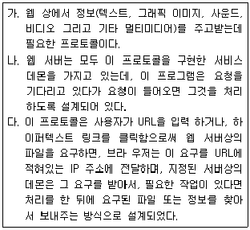
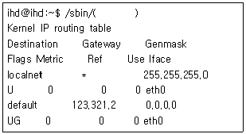
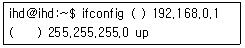
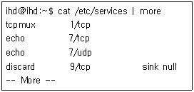
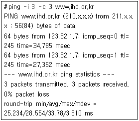
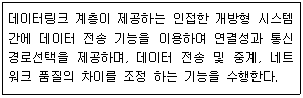
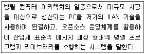

리눅스마스터-2급 (2009-12-07 기출문제)
1과목: 리눅스 운영 및 관리
1. 리눅스의 파일명에 대한 설명으로 틀린 것은?
- 연속적인 문자, 숫자 및 특정 구두점의 단순한 열로 구성된다.
- 파일명에 공백, 필드 분리자를 포함할 수 없다.
- 파일명은 윈도우즈와 같이 대소문자를 구분하지 않는다.
- 파일명의 길이는 256자까지로 제한된다.
(정답률: 81%)

2. 리눅스의 일반적인 디렉터리 특성에 대한 설명 중 틀린 것은?
- /usr : 사용자 홈 저장 디렉터리
- /etc : 각종 시스템 설정 파일 저장 디렉터리
- /boot : 부트 이미지 저장 디렉터리
- /lib : 라이브러리 저장 디렉터리
(정답률: 77%)
3. 리눅스에서 파일 및 디렉터리의 사용자 권한 설정을 위한 명령과 관계없는 것은?
- chown
- chgrp
- chsh
- chmod
(정답률: 84%)
4. 다음 중 같은 그룹에 속한 사용자에게 실행 권한을 부여하고자 할 때 사용하는 명령어가 아닌 것은?
- chmod 754 file.txt
- chmod g-x file.txt
- chmod 777 file.txt
- chmod g+x file.txt
(정답률: 75%)
5. 다음 중 파일시스템에 대한 설명으로 적합하지 않은 것은?
- 운영체제가 파일을 시스템의 디스크 상에 구성하는 방식을 말한다.
- 시스템의 디스크 파티션 상에 파일들을 연속적이고 일정한 규칙을 가지고 저장한다.
- 만약 디스크 파티션을 2개 가지고 있다면 2개의 파일 시스템을 가지고 있다고 말할 수 있다.
- 파일 시스템과 디스크 파티션은 완전히 동일한 개념이다.
(정답률: 72%)
6. 다음 중 리눅스에서 지원되는 파일 시스템이 아닌 것은?
- ext2
- NTFS
- NFS
- umsdos
(정답률: 46%)
7. 리눅스 파일 시스템을 생성하려고 할 때 사용하는 명령은?
- fsck
- fdisk
- mkfs
- df
(정답률: 82%)
8. fsck 명령으로 파일시스템 검사 시 타입 옵션(-t)을 미지정했을 때 기본 타입으로 참조하는 파일은 무엇인가?
- /etc/fstab
- /etc/hosts
- /etc/mtab
- /etc/profile
(정답률: 77%)
9. 현재 사용하고 있는 모든 디스크의 용량을 확인 하고자 할 때 사용할 수 있는 명령어는?
- ls
- df
- ps
- vi
(정답률: 85%)
10. 현재 사용하고 있는 bash shell을 c shell로 변경 하고자 할 때 사용하는 명령어로 알맞은 것은?
- chmod
- chsh
- chown
- chgrp
(정답률: 81%)
11. 하나의 프로그램이 다른 프로그램을 시작시킬 때 그 새로운 프로세스를 가리키는 것은?
- 부모 프로세스
- 형제 프로세스
- 자식 프로세스
- 상위 프로세스
(정답률: 79%)
12. 리눅스에서 현재 실행되고 있는 프로세스들의 상태를 알아볼 때 사용하는 명령어로 알맞은 것은?
- ls
- ps
- fg
- bg
(정답률: 86%)
13. 프로세스의 실행 상태를 표현하는 용어와 관련 없는 것은?
- suspend
- foreground
- background
- expand
(정답률: 79%)
14. 프로세스들 중에 백그라운드로 실행되면서 서버의 역할을 하거나 그 기능을 도와주는 프로세스를 가리키는 것은?
- daemon
- kernel
- signal
- tty
(정답률: 84%)
15. 여러 daemon들을 관리하는 super daemon을 가리키는 것은 무엇인가?
- telnetd
- httpd
- xinetd
- ftpd
(정답률: 78%)
16. 리눅스에서 실행되고 있는 프로세스들 간의 연결 상태를 트리 형식으로 출력하는 것은?
- ps
- pstree
- nice
- cron
(정답률: 89%)
17. nice 명령의 설명으로 적합하지 않은 것은?
- 프로세스들의 우선순위를 변경하고자 할 때 이용된다.
- nice 명령을 이용하여 우선순위를 낮추는 것은 불가능하다.
- 백그라운드에서 실행되는 프로세스의 우선 순위도 조정할 수 있다.
- 조정 수치는 -20 ∼ 19까지 줄 수 있으며 작을수록 높은 우선순위를 갖게 된다.
(정답률: 81%)
18. crontab을 다음과 같이 작성하였을 경우에 대한 설명 중 틀린 것은?
- * * * * * echo linux -> 시각 지정이 안되어 출력되지 않는다.
- 0 9 * * 1 echo linux -> 월요일 아침 9시에 linux 라고 출력한다.
- 0 9 1 * * echo linux -> 매월 1일 오전 9시에 linux 라고 출력한다.
- 0 9 1 9 * echo linux -> 9월 1일 오전 9시에 linux 라고 출력한다.
(정답률: 67%)
19. 정기적으로 명령이나 프로세스를 스케줄하는 cron 명령에 대한 설명 중 틀린 것은?
- cron은 시스템이 부트될 때 한 번만 시작된다.
- crontab의 시각 지정은 분, 시, 일, 월, 요일 순으로 지정한다.
- 개별 사용자도 cron 명령을 직접 실행할 수도 있다.
- 시스템 관리자는 명령의 이름을 입력하여 cron을 시작해서는 안 된다.
(정답률: 21%)
20. 하나의 프로세스가 다른 프로세스에게 메시지를 보내는 프로세스 간의 통신 수단을 무엇이라 하는가?
- nice
- ping
- kill
- signal
(정답률: 81%)
21. bash 쉘 프롬프트 상에서 어떤 명령을 후위(background)로 실행시키고 싶다. 또 후위 실행 도중에 그 프로세스가 전위(foreground)로 실행 되도록 바꾸고 싶다. 이를 위해 입력해야 하는 일련의 명령으로 거리가 가장 먼 것은?
- 명령이름 &
- jobs
- Ctrl-Z
- fg 작업번호
(정답률: 35%)
22. bash 쉘 프롬프트 상에서 INCLUDE라는 환경 변수를 새로 만들고 이 환경 변수가 /usr/include 라는 값을 갖도록 하는 쉘 명령어로 알맞은 것은?
- INCLUDE="/usr/include"
- export INCLUDE="/usr/include"
- export INCLUDE
- printenv INCLUDE
(정답률: 74%)
23. 다음의 환경변수 중 쉘 프롬프트 변경을 위해 사용되는 변수는?
- PS1
- HOME
- LOGNAME
- PWD
(정답률: 66%)
24. 다음의 쉘(shell) 프로그램에 대한 설명 중 틀린 것은?
- 사용자가 로그인에 성공한 후 실행되는 첫번째 프로그램이다.
- X 윈도우 같은 GUI 환경에서는 직접 명령을 입력할 필요가 없으므로 쉘 프로그램이 지원 되지 않는다.
- 명령어를 실행하는 명령 언어 해석기이다.
- 시스템에 대한 인터페이스를 제공하는 프로그램이다.
(정답률: 70%)
25. 다음 중 /tmp/mystrings 이라는 파일의 끝 부분에 “Add a String”이라는 문자열을 덧붙이는 쉘 명령어로 적당한 것은?
- echo "Add a String" > /tmp/mystrings
- echo "Add a String" < /tmp/mystrings
- echo "Add a String" >> /tmp/mystrings
- echo "Add a String" << /tmp/mystrings
(정답률: 60%)
26. bash에서는 환경 변수를 명령-라인에서 인자로 사용할 수 있는데, 다음 중 환경 변수 INCLUDE의 값을 출력하는 명령으로 알맞은 것은?
- echo INCLUDE
- echo "INCLUDE"
- echo "$INCLUDE"
- echo $INCLUDE
(정답률: 68%)
27. bash 사용자가 로그인할 때 환경을 설정하기 위해 읽혀지는 파일로 알맞은 것은?
- /etc/crond
- .bashrc
- .config
- .pipe
(정답률: 76%)
28. 시스템에서 사용할 수 있는 쉘 프로그램들의 종류가 등록되어 있는 파일은 무엇인가?
- /etc/passwd
- /etc/shells
- /etc/shadows
- /etc/shellprograms
(정답률: 80%)
29. 다음 emacs의 이동 키 조합에 대한 설명으로 틀린 것은?
- Ctrl+a : 라인의 처음으로 이동
- Alt+a : 문장의 처음으로 이동
- Ctrl+v : 한 화면 앞으로 이동
- Alt+> :파일 시작 부분으로 이동
(정답률: 54%)
30. 다음 중 리눅스에서 지원되는 문서 편집기와 그 유형을 잘못 짝지은 것은?
- ed - 라인 편집기
- emacs - 이메일 편집기
- vi - 스크린 편집기
- sed - 스트림 편집기
(정답률: 60%)
31. vi 편집기에서 파일을 읽기 전용으로 열 때 사용 하는 옵션은?
- -L
- -A
- -R
- -S
(정답률: 80%)
32. 텍스트 파일 전체에 대해서 문자열 mystring 모두를 yourstring으로 바꾸려고 한다. 단, 각 줄의 첫 칸부터 등장하는 mystring 만을 바꾸고 싶다. 이를 위한 적절한 vi 명령은 무엇인가?
- :1,$s/mystring/yourstring/g
- :1,$s/~mystring/yourstring/g
- :1,$s/$mystring/yourmystring/g
- :1,$s/^mystring/yourmystring/g
(정답률: 34%)
33. 다음 vi 편집기 명령어 중 입력 모드로 전환하는 명령이 아닌 것은?
- I
- O
- A
- U
(정답률: 71%)
34. vi를 사용하던 중 vi를 종료하지 않은 채 현 디렉터리 목록을 볼 수 있는 vi 명령은 무엇인가?
- :!ls
- :@ls
- :exec:ls
- :&ls
(정답률: 53%)
35. gzip 명령어에서 압축을 풀기 위한 옵션으로 알맞은 것은?
- -l
- -t
- -d
- -h
(정답률: 69%)
36. 다음 중 RPM 도구에서 제공되는 기능이 아닌 것은 무엇인가?
- 새 패키지 설치
- 설치된 패키지 찾아보기
- 패키지 데이터베이스 관리
- 인크리멘탈(incremental) 패키지 업데이트
(정답률: 39%)
37. gzip으로 압축된 텍스트 파일을, 압축을 풀지 않고 내용만 볼 때 사용하는 명령어가 아닌 것은?
- zcat
- zvi
- zless
- zmore
(정답률: 47%)
38. 다음은 어떤 명령의 최종 실행 결과이다. 이 결과를 출력한 명령어로 가장 잘 어울리는 명령은 무엇인가?
- rpm -ivht joe-3.1-8.i386.rpm
- rpm -ivh joe-3.1-8.i386.rpm
- rpm -Uvh joe-3.1-8.i386.rpm
- rpm -ivhf joe-3.1-8.i386.rpm
(정답률: 19%)
39. bash 패키지가 시스템에 설치된 날짜를 알고 싶을 때 입력해야 하는 명령은?
- rpm -ql bash
- rpm -q --qf INSTALLTIME bash
- rpm -q --qf "[ %{INSTALLTIME:date}\n]" bash
- rpm -q --qf DATE bash
(정답률: 39%)
40. compress라는 명령을 사용하여 압축된 파일을 풀고자 할 때 사용하는 압축해제 명령어는 무엇 인가?
- uncompress
- compress -e
- compress -x
- tar compress -x
(정답률: 60%)
41. rpm으로 설치했었던 패키지 joe를 제거하고자 할 때 입력해야 하는 명령은?
- rpm -p joe
- rpm -c joe
- rpm -d joe
- rpm -e joe
(정답률: 64%)
42. rpm 명령어 옵션 중 설치한 패키지의 파일들이 제대로 설치되었는가 여부를 검증할 때 사용하는 옵션으로 알맞은 것은?
- rpm -A
- rpm -O
- rpm -V
- rpm -U
(정답률: 64%)
43. 프린터 설치에 관련된 여러 가지 사항이 기록되는 설정파일은?
- /etc/protocols
- /etc/print.conf
- /etc/printcap
- /dev/lp0
(정답률: 54%)
44. 일반적으로 프린터 큐로 사용되는 spool 디렉터리로 알맞은 것은?
- /var/spool/lpd/lp
- /etc/spool/lpd/lp
- /dev/spool/lpd/lp
- /dev/output/lpd/lp
(정답률: 41%)
45. 다음 중 일반적으로 프린터를 가리키는 것은 무엇인가?
- /dev/hda1
- /dev/sda1
- /dev/lpr0
- /dev/lp0
(정답률: 60%)
46. 프린터를 이용하여 인쇄하고자 할 때 명령어로 알맞은 것은?
- lpr
- lpc
- lpq
- lpd
(정답률: 61%)
47. cdrom을 사용하려 할 때 마운트 위치로 가장 적당한 것은?
- /dev/cdrom
- /etc/cdrom
- /mnt/cdrom
- /boot/cdrom
(정답률: 60%)
48. 리눅스에 서 일반적으로 오디오를 사용하기 위한 사운드 카드의 지원 여부를 확인할 수 있는 곳은?
- /dev/output/Documentation/sound
- /usr/src/linux/Documentation/sound
- /dev/audio/Documentation/sound
- /usr/lib/linux/Documentation/sound
(정답률: 25%)
2과목: 리눅스 활용
49. 다음 중 X윈도우 특징과 거리가 가장 먼 것은?
- GUI 환경의 구현을 위한 소프트웨어와 네트워크 프로토콜이다.
- 서버와 클라이언트가 동일한 컴퓨터에서 작동하지 않아도 된다.
- 스크롤바, 아이콘, 색상 등의 그래픽 환경에 필요한 자원들이 특정한 형태로 정의되어 있다.
- X-서버, X-클라이언트, X-프로토콜, Xlib, Xtoolkit 등으로 구성되어 있다.
(정답률: 39%)
50. 다음 중 XF86Config 파일에서 설정할 수 없는 것은?
- 키보드
- 모니터
- 그래픽 장치
- 네트워크
(정답률: 57%)
51. X윈도우의 X-서버의 기능으로 틀린 것은?
- 그래픽 디스플레이 하드웨어를 제어해 윈도우를 화면에 보여준 뒤 답신을 보낸다.
- 애플리케이션의 사용자 컴퓨터에서 실행된다.
- 사용자의 입력을 X-클라이언트에게 전달한다.
- 리눅스 서버에 상주하여 X-클라이언트의 요청을 받는다.
(정답률: 25%)
52. 리눅스 부팅 시 기본적으로 X윈도우로 실행되도록 하는 런레벨(Run Level)과 해당 설정 파일로 바르게 짝지어진 것은?
- 0 - /etc/passwd
- 5 - /etc/inittab
- 4 - /etc/Xconfigurator
- 5 - /etc/startx
(정답률: 53%)
53. 다음 중 데스크탑 환경에 대한 설명으로 옳지 못한 것은?
- KDE는 파일매니저, 윈도매니저, 도움말시스템과 각종 애플리케이션의 집합체이다.
- KDE, GNOME 외에도 fvwm, twm, windowMaker 등 다양한 데스크탑 환경이 존재한다.
- 동영상, 음악 등 각종 멀티미디어 파일을 실행 시킬 수 있다.
- KDE와 GNOME을 하나의 시스템에 설치하여 사용할 수 있다.
(정답률: 44%)
54. X윈도우 응용 프로그램에서 개별적인 부품 형태의 버튼, 메뉴, 대화창과 같은 GUI 객체와 객체지향적인 일반 함수를 무엇이라고 하는가?
- 위젯(Widget)
- 인터페이스(Interface)
- 라이브러리(Library)
- 프로토콜(Protocol)
(정답률: 45%)
55. 다음 중 현재 사용중인 데스크톱 환경 간 전환하고자 할 때 사용할 수 있는 명령어로 가장 적절한 것은?
- switchdesk
- yum
- startx
- xf86setup
(정답률: 51%)
56. X윈도우가 실행되어 있는 상태에서 또 하나의 X윈도우를 실행하기 위한 명령어로 가장 적당한 것은?
- startx -- :1
- xauth add :0
- xhost +1
- xset +dpms
(정답률: 59%)
57. 다음 중 LAN을 토폴로지(Topology)로 분류한 형태가 아닌 것은?
- Star topology LAN
- Bus topology LAN
- Mesh topology LAN
- TCP/IP topology LAN
(정답률: 73%)
58. 다음 중 네트워크 프로토콜의 기본 기능으로 가장 적합하지 않은 것은?
- 데이터 대열의 분할(Segmentation)
- 에러 제어(Error Control)
- 게이트웨이(Gateway)
- 흐름 제어(Flow Control)
(정답률: 50%)
59. TCP/IP 프로토콜의 내부계층과 해당 프로토콜이 바르게 짝지어진 것은?
- 전송계층 : TCP, IP, ARP
- 응용계층 : 이더넷, FDDI, 직렬
- 인터넷 : IP, ICMP, ARP
- 네트워크 : TELNET, FTP
(정답률: 52%)
60. 홍길동의 사무실에서는 서브넷 마스크 255.255.0.0을 사용하고, 게이트웨이의 IP주소는 167.123.0.1을 사용한다. 다음 중 홍길동의 사무실 PC에서 사용 할 수 있는 IP 주소는?
- 167.123.0.21
- 167.124.1.255
- 167.123.0.1
- 167.12.3.21
(정답률: 66%)
61. 다음 중 도메인 네임에 대한 설명으로 적절하지 않은 것은?
- 숫자로 표현된 IP주소를 사람들이 기억하고 사용하기 쉽도록 영문자로 표현한 주소이다.
- 도메인 네임에는 숫자를 사용할 수 없다.
- 국가 이름을 나타내는 최상위 도메인으로서, kr, jp, ca, de 등이 있다.
- 일반적으로 호스트 이름, 기관 이름, 기관 종류, 국가 이름의 4개 영역으로 구분된다.
(정답률: 65%)
62. 다음은 LAN 통합을 위한 통신 장비 및 그에 대한 설명이다. 가장 적절한 것을 고르시오.
- 라우터 - 디지털 방식의 통신 선로에서 전송 신호를 증폭 재생하여 전달하는 통신장치
- 리피터 - 정보를 주고받을 때 송신 패킷에 담긴 수신처의 주소를 읽고 가장 적절한 통신 통로를 이용하여 다른 통신망으로 전송하는 장치
- 브리지 - 두 개의 LAN을 상호 접속할 수 있도록 하는 통신망 연결 장치
- 게이트웨이 - 버스형 토폴로지에서 버스와 각 노드를 연결하는 데 사용되는 장치
(정답률: 65%)
63. 다음 중 Telnet 으로 시스템에 접속했을 때, 로그인 하기 전에 사용자에게 해당 시스템에 대한 설명을 알리는 문구를 설정하기 위한 파일로 가장 적절한 것은?
- /etc/passwd
- /etc/init.d
- /etc/motd
- /etc/issue.net
(정답률: 49%)
64. 다음 인터넷 서비스 종류와 그 설명으로 가장 적절한 것은?
- FTP - 원격으로 파일을 송수신 할 수 있는 서비스이다.
- 전자우편(email) - 사용자간 단문 메시지만을 주고받을 수 있도록 해주는 웹 전용서비스이다.
- 블로그(Blog) - 하이퍼텍스트 기능을 이용하여 다른 곳의 문서를 참조할 수 있도록 해 주는 서비스이다.
- 위키(Wiki) - 사용자가 자신만의 글을 게재 하고 인터넷상에 공유할 수 있도록 해주는 서비스이다.
(정답률: 52%)
65. 다음 중 수신된 메일을 서버로부터 PC로 배달 하기 위한 프로토콜로 가장 적절한 것은?
- SMTP
- POP3
- FTP
- Samba
(정답률: 54%)
66. 다음 ftp 명령어 중 파일을 주고받을 때 “#” 을 표시하여 진행 상황을 확인해 줄 수 있도록 도와주는 ftp 명령어는?
- hash
- mget
- put
- echo
(정답률: 68%)
67. 다음 중 삼바(Samba)에 대한 설명으로 가장 적절치 않은 것은?
- 여러 대의 PC 간 파일공유를 위한 프로토콜 이다.
- 삼바를 활용하여 여러 대의 PC간 프린터를 공유할 수 있다.
- 사무실내 PC 시간 설정을 동기화 시킬 수 있다.
- 리눅스와 Microsoft Windows간에 디스크를 공유할 수 있다.
(정답률: 58%)
68. 다음 중 아래 보기에서 설명하는 것으로 가장 적절한 것은?

- HTTP
- HTML
- FTP
- WWW
(정답률: 62%)
69. 인터넷을 사용하기 위해서는 인터넷 브라우저라는 어플리케이션 사용이 필수적이다. 다음 중 인터넷 브라우저로 보기 어려운 것은?
- 파이어폭스
- 크롬
- 썬더버드
- 오페라
(정답률: 74%)
70. 네트워크 설정 시 커널상의 IP 라우팅 테이블을 확인할 수 있는 명령어로서 아래 보기의 ( )안에 들어갈 가장 적절한 명령어는?

- route
- ifconfig
- ping
- traceroute
(정답률: 66%)
71. 아래 보기는 이더넷 인터페이스 eth0에 192.168.0.1의 IP주소와 255.255.255.0의 네트워크 마스크를 설정하고 있는 모습이다. 다음 ( )안에 들어갈 내용을 순서대로 가장 적절하게 나타낸 것은?

- eth0, netmask
- ip, subnetmask
- ip, networkmask
- eth0, networkmask
(정답률: 72%)
72. 다음 보기의 명령어 실행 결과에 대한 설명으로 가장 적절한 것은?

- 시스템에서 제공하는 웹 서비스의 종류를 확인 하고 있다.
- 리눅스에서 기본적인 서비스에서 사용되는 잘 알려진 포트 번호를 확인하고 있다.
- 현재 운영 중인 서비스 프로세스를 확인하고 있다.
- 현재 시스템에 접속중인 사용자 현황을 확인 하고 있다.
(정답률: 43%)
73. 다음 명령어 수행 결과에 대한 설명으로 가장 적절치 않은 것은?

- -i 옵션을 통하여 보내는 패킷 수를 3개로 지정 하고 있다.
- 현재 시스템과 www.ihd.or.kr 간에 3개의 패킷이 송수신되었다.
- 손실된 패킷은 하나도 없었다.
- 3초마다 한 번씩 패킷을 보내도록 설정하였다.
(정답률: 37%)
74. 다음 중 리눅스에서 네트워크 설정을 하는 명령어로 가장 적절치 않은 것은?
- ifconfig
- linuxconf
- netconfig
- telnet
(정답률: 53%)
75. 다음은 인터넷 프로토콜별 well-known 포트번호를 나타낸 것이다. 다음 중 포트번호가 틀린 것은?
- HTTP : 80
- SMTP : 25
- TELNET : 23
- SSH : 21
(정답률: 76%)
76. 다음은 OSI 7계층 구조 중 어느 계층에 대한 설명인가?

- 네트워크(Network)계층
- 표현(Presentation)계층
- 세션(Session)계층
- 전송(Transport)계층
(정답률: 60%)
77. 다음 중 인터넷 연결 설정을 위하여 확인해야 하는 항목에 대한 설명으로 가장 적절치 않은 것은?
- 네트워크 케이블의 연결 상태
- ifconfig 명령어를 통한 DNS 설정 여부
- 리눅스 운영체제 상에 네트워크 인터페이스가 제대로 설정되어 있는지 여부
- traceroute 를 통해 게이트 밖의 서버까지 패킷이 제대로 전달되는지 여부
(정답률: 55%)
78. 다음 중 아래 보기가 설명하고 있는 기술로서 가장 적절한 것은?

- 클러스터링
- 그리드 컴퓨팅
- 메쉬업
- OpenID
(정답률: 61%)
79. 다음 중 임베디드 시스템의 예로서 가장 적절치 않은 것은?
- 스마트폰
- 전기밥솥
- MP3 플레이어
- 넷북(Netbook)
(정답률: 47%)
80. 다음 중 병렬처리 시스템과 가장 관련이 적은 것은?
- MPI (Message Passing Interface)
- Beowulf Cluster Architecture
- Embedded Realtime Linux
- MPP (Massive Parallel Processing)
(정답률: 45%)